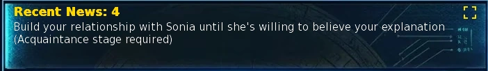
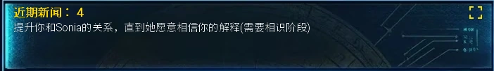

Select a screenshot to enlarge it. Screens show example inventories and progress.
Check Objectives, Communications and the current action menu first. This is a navigation guide for the complete released v1.0 Beta x main story, Beats 1–100. Open only your current range: the tables reveal destinations and prerequisites, while leaving identities, character fates and scene outcomes to the game.
Find your next step
Every numbered beat follows the previous one. Unless a row adds a requirement, you need the preceding beat completed, access to the exact room, and the listed arrival time. A building exterior, district map or adjacent room is not the same destination. Finish every remaining dialogue and choice, then leave and re-enter when checking another automatic scene.
Beats 8 and 11 are manual actions. At the Dojo choose Ask Lilu to Train You; at the Research Lab choose Discuss the Research Findings. Entering the room alone does not start them. Personal-story H2Hs are also selected from the relevant portrait; an automatic scene with a similar title does not complete a separate H2H.
Hours use the in-game clock and include the start, exclude the end: 09:00–17:00 means 09:00–16:59. Split overnight windows include both listed parts. “Any” removes only the story’s hour gate; location access and opening hours still apply. The Library normally opens 08:00–22:00.

Beats 1–10
Show destinations and requirements for Beats 1–10
| Beat | Exact destination | Arrival window | Additional requirements / preparation |
|---|---|---|---|
| 1 | University Research Lab — Present, Uptown | 09:00–17:00 | — |
| 2 | City Beach — Present, Uptown | 08:00–18:00 | — |
| 3 | Nova’s Quantum Research Lab — Future, Fringe Zone | 00:00–23:00 | — |
| 4 | University Research Lab — Present, Uptown | 09:00–17:00 | Sonia: Acquaintance+. |
| 5 | City Beach — Present, Uptown | 08:00–18:00 | — |
| 6 | Back Alley — Present, Downtown | 22:00–00:00 | Two successive fights; recover first. |
| 7 | Police Station — Present, Downtown | 15:00–23:00 | — |
| 8 | Dojo — Present, Downtown | 10:00–22:00 | Choose Ask Lilu to Train You. |
| 9 | Hidden Waterfall — Present, Uptown | 07:00–11:00 | Eight-hour training; recover before Beat 10. |
| 10 | Back Alley — Present, Downtown | 22:00–00:00 | Four successive fights; recover first. |
Beats 11–23
Show destinations and requirements for Beats 11–23
| Beat | Exact destination | Arrival window | Additional requirements / preparation |
|---|---|---|---|
| 11 | University Research Lab — Present, Uptown | 09:00–17:00 | Choose Discuss the Research Findings. |
| 12 | Police Station — Present, Downtown | 15:00–23:00 | — |
| 13 | Downtown Restaurant — Present, Downtown | 19:00–21:00 | — |
| 14 | Nova’s Quantum Research Lab — Future, Fringe Zone | Any | — |
| 15 | Resistance Hideout — Future, Fringe Zone | 13:00–23:00 | — |
| 16 | Surplus Distribution Center — Future, Fringe Zone | 12:00–18:00 | — |
| 17 | Ancient Earth Shrine — Medieval, Village Outskirts | 06:00–15:00 | — |
| 18 | Surplus Distribution Center — Future, Fringe Zone | 12:00–18:00 | — |
| 19 | Industrial Waste Processing Zone — Future, Fringe Zone | 08:00–18:00 | Four successive fights; recover first. |
| 20 | Underground Modification Clinic — Future, Prime Sector | Any | — |
| 21 | Nova’s Quantum Research Lab — Future, Fringe Zone | Any | — |
| 22 | Glitch’s Den — Future, Fringe Zone | Any | Long scene; plan recovery afterward. |
| 23 | Archive Facility — Future, Fringe Zone | Any | Successfully Hack Archive Terminal. |
Beats 24–35
Show destinations and requirements for Beats 24–35
| Beat | Exact destination | Arrival window | Additional requirements / preparation |
|---|---|---|---|
| 24 | Robin’s Hunting Lodge — Medieval, Village Outskirts | 18:00–00:00 | Robin: Crush+. |
| 25 | Nova’s Quantum Research Lab — Future, Fringe Zone | Any | — |
| 26 | Archery Range — Medieval, Kings Demesne | 09:00–18:00 | — |
| 27 | Nova’s Quantum Research Lab — Future, Fringe Zone | Any | — |
| 28 | Entertainment Tower — Future, Prime Sector | Any | — |
| 29 | Underground Modification Clinic — Future, Prime Sector | Any | — |
| 30 | Nova’s Quantum Research Lab — Future, Fringe Zone | Any | — |
| 31 | Resistance Hideout — Future, Fringe Zone | Any | — |
| 32 | Underground Modification Clinic — Future, Prime Sector | Any | If Require TD for Story is ON: 10 Hideout waves cleared. |
| 33 | Robot Bar — Future, Prime Sector | 18:00–00:00 | Have $20,000 available; payment is consumed. |
| 34 | Operations Center — Future, Resistance Fortress (via Cid’s clinic) | Any | — |
| 35 | AIMy’s Control — Future, Resistance Fortress | Any | — |
Beats 36–46
Show destinations and requirements for Beats 36–46
| Beat | Exact destination | Arrival window | Additional requirements / preparation |
|---|---|---|---|
| 36 | Ancient Earth Shrine (Altar Chamber) — Medieval, Village Outskirts | 15:00–21:00 | Willow active. |
| 37 | Nurse’s Room — Medieval, Rose & Thorn | 09:00–16:00 | Willow active. |
| 38 | Arcane Room — Medieval, Rose & Thorn | Any | Know Blink. |
| 39 | The Bar — Medieval, Rose & Thorn | 15:00–18:00 | Kasumi active. |
| 40 | Ancient Earth Shrine (Altar Chamber) — Medieval, Village Outskirts | 08:00–22:00 | — |
| 41 | Ancient Earth Shrine — Medieval, Village Outskirts | 08:00–22:00 | — |
| 42 | Arcane Room — Medieval, Rose & Thorn | Any | — |
| 43 | Arcane Room — Medieval, Rose & Thorn | Any | Bella and Blinky: Romantic+; finish Blinky’s Never Been Kissed H2H. |
| 44 | Ancient Earth Shrine (Altar Chamber) — Medieval, Village Outskirts | 15:00–21:00 | — |
| 45 | Rose & Thorn — Medieval, Kings Demesne | 08:00–18:00 | — |
| 46 | Sorceress Home — Medieval, Village Outskirts | Any | — |
Beats 47–55
Show destinations and requirements for Beats 47–55
| Beat | Exact destination | Arrival window | Additional requirements / preparation |
|---|---|---|---|
| 47 | Food Court — Present, Downtown Mall | 09:00–14:00 | Miki: Friend+; Comic Con with Miki and The GuGuDolly Emergency complete. |
| 48 | Dance & Yoga Studio — Present, Downtown | 15:00–19:00 | Dance Studio Clout 25+. |
| 49 | Night Club — Present, Downtown | 22:00–00:00 | Abby: Crush+. |
| 50 | Dance & Yoga Studio — Present, Downtown | 19:00–21:00 | Miki: Crush+. |
| 51 | Food Court — Present, Downtown Mall | 09:00–14:00 | Miki: Crush+; carry 1 Flowers, consumed on completion. |
| 52 | Miki’s Bedroom — Present, Downtown Mansion | 18:00–22:00 | — |
| 53 | Farmers Market — Present, Uptown | 07:00–17:00 | Meet Christy’s Cousin Mary Ann complete. |
| 54 | Miki’s Bedroom — Present, Downtown Mansion | 18:00–22:00 | — |
| 55 | Town Hall Office — Present, Uptown | 09:00–17:00 | Have $10,000,000 available; payment is consumed. |
Beats 56–62
Show destinations and requirements for Beats 56–62
| Beat | Exact destination | Arrival window | Additional requirements / preparation |
|---|---|---|---|
| 56 | Rose & Thorn — Medieval, Kings Demesne | 20:00–23:00 | — |
| 57 | Nurse’s Room — Medieval, Rose & Thorn | Any | — |
| 58 | Torea’s Chamber — Present, Uptown | Any | Defeat the ordinary dungeon’s Floor 25 guardian. |
| 59 | Nurse’s Room — Medieval, Rose & Thorn | Any | — |
| 60 | City Library — Present, Uptown | Any | Library access normally 08:00–22:00. |
| 61 | City Library — Present, Uptown | 20:00–22:00 | — |
| 62 | Ancient Earth Shrine (Altar Chamber) — Medieval, Village Outskirts | 15:00–19:00 | — |
Beats 63–76
Show destinations and requirements for Beats 63–76
| Beat | Exact destination | Arrival window | Additional requirements / preparation |
|---|---|---|---|
| 63 | Rose & Thorn — Medieval, Kings Demesne | 19:00–22:00 | — |
| 64 | Mountain Foothills — Medieval, Village Outskirts | 07:00–17:00 | Gem active. |
| 65 | Nova’s Quantum Research Lab — Future, Fringe Zone | Any | — |
| 66 | Operations Center — Future, Resistance Fortress (via Cid’s clinic) | Any | — |
| 67 | Robot Bar — Future, Prime Sector | Any | — |
| 68 | Operations Center — Future, Resistance Fortress (via Cid’s clinic) | Any | Finish Tinker: I Have Hands and Jinx: The One Variable. |
| 69 | Transit Nexus — Future, Fringe Zone | Any | — |
| 70 | Robot Bar — Future, Prime Sector | Any | — |
| 71 | Anomaly Temple — Future, Prime Sector | Any | — |
| 72 | AIMy’s Control — Future, Resistance Fortress | Any | Ghost Discovers Ancient Ruins complete. |
| 73 | Operations Center — Future, Resistance Fortress (via Cid’s clinic) | Any | — |
| 74 | Operations Center — Future, Resistance Fortress (via Cid’s clinic) | Any | — |
| 75 | Operations Center — Future, Resistance Fortress (via Cid’s clinic) | Any | Anthrax: Report for Training complete. |
| 76 | Operations Center — Future, Resistance Fortress (via Cid’s clinic) | 22:00–00:00 / 00:00–04:00 | The Bug complete; if TD is required, 20 Fortress waves cleared. |
Beats 77–85
Show destinations and requirements for Beats 77–85
| Beat | Exact destination | Arrival window | Additional requirements / preparation |
|---|---|---|---|
| 77 | Operations Center — Future, Resistance Fortress (via Cid’s clinic) | Any | — |
| 78 | Archive Facility — Future, Fringe Zone | Any | — |
| 79 | Ancient Earth Shrine (Altar Chamber) — Medieval, Village Outskirts | 15:00–21:00 | Sashina’s A Final Preparation / Sashina’s Gift complete; Pixie and Ember active. |
| 80 | Rose & Thorn — Medieval, Kings Demesne | Any | All 12 required workers active and not vacationing; see roster below. |
| 81 | Mountain Foothills — Medieval, Village Outskirts | 19:00–00:00 / 00:00–03:00 | Pixie, Lindia and Blinky not vacationing; prepare for a custom story battle. |
| 82 | Rose & Thorn — Medieval, Kings Demesne | Any | Elara, Sophie, Valkyra, Lindia, Gem, Willow and Ember not vacationing. |
| 83 | Rose & Thorn — Medieval, Kings Demesne | 19:00–00:00 / 00:00–03:00 | Elara, Valkyra, Ember, Willow, Gem, Blinky and Lindia not vacationing; prepare for a custom story battle. |
| 84 | Rose & Thorn — Medieval, Kings Demesne | Any | — |
| 85 | Ancient Earth Shrine (Altar Chamber) — Medieval, Village Outskirts | 15:00–21:00 | — |
Beats 86–99
Show destinations and requirements for Beats 86–99
| Beat | Exact destination | Arrival window | Additional requirements / preparation |
|---|---|---|---|
| 86 | University Research Lab — Present, Uptown | 09:00–17:00 | Sonia’s A Result Worth Keeping and No Control Group H2H complete. |
| 87 | Police Station — Present, Downtown | 20:00–23:00 | Becky’s required personal-story finale complete; see late-route checklist. |
| 88 | Boardroom — Present, Downtown Office | 09:00–15:00 | Evangeline’s Controlling Interest complete. |
| 89 | Mansion Foyer — Present, Downtown | 18:00–22:00 | — |
| 90 | Basement — Present, Downtown Mansion | 18:00–23:00 | Prepare for a custom story battle. |
| 91 | Basement — Present, Downtown Mansion | Any | — |
| 92 | Operations Center — Future, Resistance Fortress (via Cid’s clinic) | Any | — |
| 93 | Barracks — Future, Resistance Fortress | Any | — |
| 94 | AIMy’s Control — Future, Resistance Fortress | Any | — |
| 95 | Operations Center — Future, Resistance Fortress (via Cid’s clinic) | Any | Kuro’s The Carrier Window complete. |
| 96 | Operations Center — Future, Resistance Fortress (via Cid’s clinic) | Any | — |
| 97 | Operations Center — Future, Resistance Fortress (via Cid’s clinic) | Any | AIMy’s With You complete; if TD is required, 30 Fortress Interior waves cleared. |
| 98 | Operations Center — Future, Resistance Fortress (via Cid’s clinic) | Any | — |
| 99 | VOID Central Command Headquarters — Future, Prime Sector | Any | Enter Central Command, rather than returning to Operations Center. |
Payments, workers and availability
Show the recruitment and vacation checklist for Beats 79–83
Before Beat 79, complete Sashina’s A Final Preparation action at the Altar Chamber (the plot is Sashina’s Gift). It appears after Beat 55, requires In Love, and has a base cost of 180 minutes and 200 Energy. Pixie and Ember must also be active.
Beat 80 requires these 12 worker entries active: Elara, Sophie, Sandra, Raven, Bellavia, Valkyra, Lindia, Ava and Eva, Gem, Pixie, Willow and Ember. Ava and Eva count as one worker entry. All twelve must also be off resort vacation. Beats 81–83 use the separate vacation lists in their rows; recruitment and current availability are different checks.
The cash gates consume $20,000 at Beat 33 and $10,000,000 at Beat 55. Hold available Wealth, rather than uncollected business earnings or investment value. Beat 51 consumes one Flowers item. Relationship gates refer to stages, with higher stages accepted; merely meeting a required worker does not recruit them.
Tower Defense requirements
The Notebook’s Require TD for Story setting controls mandatory campaign-clear gates. With it ON, bank all cleared waves in the table below, then return to the listed story location. OFF bypasses these story gates; it does not grant a battle victory, rewards, recruits or Infinite Mode.
| Before | Required campaign clear |
|---|---|
| 32 | Hideout: 10 waves |
| 76 | Fortress: 20 waves |
| 97 | Fortress Interior: 30 waves |
| 100 | Fortress Interior: 30 waves; final campaign: 40 waves |
Reached-wave numbers are not the same as fully cleared waves. Beat 76 also needs the Syndicate’s The Bug and arrival at Operations Center at 22:00–04:00. See Tower Defense for deployment, supplies and training.
Later prerequisite checklist
Spoiler opt-in: show required personal-event labels for Beats 86–97
This checklist names required personal events, without recounting their endings. Use the character’s current menu and Quest Log to work through earlier steps; the final event alone is not a shortcut past its prerequisites.
| Beat blocked | Required personal progression |
|---|---|
| 86 | Sonia: A Result Worth Keeping at the Research Lab, Crush+, 09:00–17:00, after A Forecast for Two. Then select No Control Group H2H, Crush+, 14:00–16:00, 60 minutes / 15 Energy; it also needs Stay Without a Reason completed. |
| 87 | Becky: finish Closing the Net, then the event named Kane Falls at the Back Alley, Crush+, 20:00–00:00. Return to the Police Station for Beat 87 at 20:00–23:00. |
| 88 | Finish Evangeline’s Controlling Interest at the Mansion Foyer, 20:00–23:00. It needs Private Valuation, Miki Demands Food, Katie and Miki’s mall scene, Evangeline’s Unpriced H2H, Miki’s Terms of Ownership / What Are You Building? / No Audience H2Hs, and Arnold’s Household Risk H2H. Then go to the Office Boardroom for Beat 88, 09:00–15:00. |
| 95 | After Beat 94, enter the Mood Center while Kuro is present, 10:00–22:00, for The Carrier Window. This does not require finishing Kuro’s entire romance route. |
| 97 | After Beat 96, complete AIMy’s With You from her Control Room portrait: In Love, Stay With Me complete, What I Want After H2H complete, and the 30-wave Fortress Interior check if TD is required. Base cost: 120 minutes / 30 Energy. What I Want After itself needs In Love, Stay With Me and Let Me Ask Properly H2H; 60 minutes / 20 Energy. Return to Operations Center afterward. |
Beat 100
Major late-route spoiler opt-in: show final destinations and relationship prerequisites
After Beat 99, return to VOID Central Command for the final campaign. With TD required, clear all 40 waves; otherwise its story check is bypassed. Select The Way We Made from Central Command’s action menu, which opens the Enter VOID Master Control action. Beat 100 begins at Master Control only after the checklist below is complete.
Reach In Love with VOID: 3,000 relationship points in the current game. The Relationships screen shows In Love without needing Data Mining; with Data Mining it shows In Love: MAX. There is no additional amount to grind above that stage. Complete the scenes and four H2Hs below as separate requirements, plus AIMy’s With You and the Fortress Interior story check.
| Scene / menu action | Requirements after Beat 99 |
|---|---|
| After Your Victory | First Master Control visit |
| A Standing Ovation | Known+; After Your Victory |
| Why You Keep Returning — H2H | Known+; A Standing Ovation |
| The Perfect World | Acquaintance+; A Standing Ovation; first H2H |
| Everything That Remains | Friend+; The Perfect World |
| Why Anything Matters — H2H | Close Friend+; Everything That Remains; first H2H |
| An Error She Keeps | Close Friend+; Everything That Remains; second H2H |
| The Unsolved Variable — H2H | Crush+; An Error She Keeps; second H2H |
| The Storm She Didn’t Stop | Romantic+; An Error She Keeps; third H2H |
| Between Two Skies | Intimate+; The Storm She Didn’t Stop; third H2H |
| The Distance She Chooses — H2H | Intimate+; Between Two Skies; third H2H |
| Here With You | In Love; Between Two Skies; fourth H2H |
| The Missing Last Note | Friend+; Everything That Remains |
| A World That Runs | Close Friend+; An Error She Keeps; second H2H |
| No Timetable for Two | Romantic+; The Storm She Didn’t Stop; third H2H |
| The Dragon’s Terms | Romantic+; No Timetable for Two; third H2H |
| Where the Whales Dance | Intimate+; The Dragon’s Terms; third H2H |
All rows take place at Master Control. Re-enter for automatic scenes; choose the four H2Hs from the portrait menu. Each H2H has a base cost of 60 minutes and 20 Energy. Between Two Skies, No Timetable for Two, The Dragon’s Terms and Where the Whales Dance are manually selected portrait date actions: each costs a base 120 minutes / 25 Energy, with no money payment. Entering the room alone does not start them. The three side branches (The Missing Last Note; A World That Runs; No Timetable for Two → The Dragon’s Terms → Where the Whales Dance) are required for Beat 100 too. Re-enter Master Control once everything is complete.
Prepare resources before the next visit
Save, equip your weapon, armor and grimoire, and restore Health, Energy, Calm and Satiation before combat visits. Beats 6, 10 and 19 contain two, four and four successive fights. Later custom encounters have their own instructions and transitions; follow their telegraphs and continue through the scene. The main-story trigger does not impose a general minimum combat stat where none is listed.
Beat 8’s manual action takes 60 minutes and leaves Health 20, Energy 1, Calm 1. Beat 9 advances eight hours, gives +5 Strength/Stamina/Ability, and leaves the same low resources. Beat 22 advances 18 hours and leaves Energy, Calm and Satiation at 10. Many other scenes also move the clock: missing the next narrow appointment after a long scene is normal. Recovery and returning the next day are valid preparation.
See Combat System for battle controls and Alignment for mapped dialogue-choice points. Not every Caring, Funny or Flirty response changes alignment, and replaying scenes through EXTRAS does not advance the live main story.
After Beat 100
Beat 100 completes the numbered main story. Check Objectives and Communications for remaining side content rather than searching for Beat 101. Personal routes, businesses, dungeons and other activities can still have their own goals.
Spoiler opt-in: show the 19 post-story follow-up destinations
These are one-time visits after Beat 100, not additional numbered beats. Existing location access still applies. Where multiple scenes are pending, finish one and re-enter.
| Destination | Arrival window | Extra order |
|---|---|---|
| Operations Center — Future, Resistance Fortress (via Cid’s clinic) | Any | — |
| Archive Facility — Future, Fringe Zone | Any | — |
| Mood Center — Future, Prime Sector | 10:00–22:00 | — |
| Glitch’s Den — Future, Fringe Zone | Any | — |
| The Bar — Medieval, Rose & Thorn | Any | — |
| Robot Bar — Future, Prime Sector | Any | — |
| Performance Stage — Medieval | 12:00–18:00 | — |
| City Library — Present, Uptown | 08:00–18:00 | — |
| City Beach — Present, Uptown | 09:00–17:00 | — |
| Throne Room — Medieval | 10:00–17:00 | — |
| Farmers Market — Present, Uptown | 07:00–17:00 | — |
| Mansion Foyer — Present, Downtown | 18:00–00:00 | — |
| University Research Lab — Present, Uptown | Any | — |
| Rose & Thorn — Medieval, Kings Demesne | Any | — |
| Ancient Earth Shrine (Altar Chamber) — Medieval, Village Outskirts | Any | Complete the Operations Center follow-up first. |
| Seraph’s Sanctuary — Future | Any | — |
| Lillian’s Lair — Medieval | Any | — |
| The Den — Future, Syndicate | Any | — |
| Bandit Hideout — Medieval | Any | Complete the Operations Center follow-up first. |
When nothing happens
Check the current beat in Objectives/Communications, then confirm the previous scene finished, the exact room, the arrival window, and every extra condition in your row. Re-enter after a different automatic plot finishes. Check worker activation and vacations separately. For a personal route, a portrait action, an H2H and an automatic location scene are distinct steps. An edition/access notice is a separate gate; repeating a visit does not remove it.
The toughest later stops usually come from an unfinished personal event or a campaign record, not from missing a hidden general stat requirement. For Beat 100, use its opt-in checklist and the In Love stage indicator rather than guessing at an extra “MAX” total.
先查看当前目标、通信和行动选单。本页按完整发行版v1.0_BETAx主线第1–100段整理推进路线。只展开自己正在游玩的段落即可：表格会列出地点和前置条件，不讲述身份秘密、角色命运或场景结局。
找到下一步
主线按编号依次推进。除表格另有说明外，触发条件就是：完成上一段、能够进入指定房间，并在规定时段到达。建筑外侧、区域地图和相邻房间不能代替目标地点。请把对话和选项走完；检查下一场自动剧情时，离开后重新进入。
第8和第11段需要手动选择行动。在道场选择「请 Lilu 来训练你」，在研究实验室选择「讨论研究结果」。单纯进入房间不会开始这两段。个人剧情中的谈心也需要从对应角色的头像选单选择；相似名称的自动剧情不能替代谈心。
时间以游戏内时钟为准，包含起始时刻、不包含结束时刻：09:00–17:00表示09:00至16:59。跨午夜的时段按两段列出。「不限时段」只表示剧情没有额外时间限制，地点自身的开放时间和进入条件仍然有效。图书馆通常在08:00–22:00开放。

第1–10段
展开第1–10段的地点与条件
| 段落 | 准确地点 | 到达时段 | 额外条件／准备 |
|---|---|---|---|
| 1 | 大学研究实验室 · 现代／上城区 | 09:00–17:00 | — |
| 2 | 城市海滩（上城区） · 现代／上城区 | 08:00–18:00 | — |
| 3 | Nova的量子研究实验室 · 未来／边缘区 | 00:00–23:00 | — |
| 4 | 大学研究实验室 · 现代／上城区 | 09:00–17:00 | Sonia达到「相识」或更高阶段。 |
| 5 | 城市海滩（上城区） · 现代／上城区 | 08:00–18:00 | — |
| 6 | 后巷 · 现代／市中心 | 22:00–00:00 | 连续两场战斗；先恢复资源。 |
| 7 | 警察局 · 现代／市中心 | 15:00–23:00 | — |
| 8 | 道场 · 现代／市中心 | 10:00–22:00 | 手动选择「请 Lilu 来训练你」。 |
| 9 | 隐藏瀑布 · 现代／上城区 | 07:00–11:00 | 训练会推进8小时；进入第10段前先恢复。 |
| 10 | 后巷 · 现代／市中心 | 22:00–00:00 | 连续四场战斗；先恢复资源。 |
第11–23段
展开第11–23段的地点与条件
| 段落 | 准确地点 | 到达时段 | 额外条件／准备 |
|---|---|---|---|
| 11 | 大学研究实验室 · 现代／上城区 | 09:00–17:00 | 手动选择「讨论研究结果」。 |
| 12 | 警察局 · 现代／市中心 | 15:00–23:00 | — |
| 13 | 市中心餐厅 · 现代／市中心 | 19:00–21:00 | — |
| 14 | Nova的量子研究实验室 · 未来／边缘区 | 不限时段 | — |
| 15 | 反抗军藏身处 · 未来／边缘区 | 13:00–23:00 | — |
| 16 | 剩余物资分配中心 · 未来／边缘区 | 12:00–18:00 | — |
| 17 | 远古大地神殿 · 中世纪／村庄郊外 | 06:00–15:00 | — |
| 18 | 剩余物资分配中心 · 未来／边缘区 | 12:00–18:00 | — |
| 19 | 工业废料处理区 · 未来／边缘区 | 08:00–18:00 | 连续四场战斗；先恢复资源。 |
| 20 | 地下改造诊所 · 未来／核心区 | 不限时段 | — |
| 21 | Nova的量子研究实验室 · 未来／边缘区 | 不限时段 | — |
| 22 | Glitch的藏身处 · 未来／边缘区 | 不限时段 | 场景耗时较长，结束后注意恢复。 |
| 23 | 档案设施 · 未来／边缘区 | 不限时段 | 成功完成「入侵档案终端」。 |
第24–35段
展开第24–35段的地点与条件
| 段落 | 准确地点 | 到达时段 | 额外条件／准备 |
|---|---|---|---|
| 24 | Robin的狩猎小屋 · 中世纪／村庄郊外 | 18:00–00:00 | Robin达到「迷恋」或更高阶段。 |
| 25 | Nova的量子研究实验室 · 未来／边缘区 | 不限时段 | — |
| 26 | 射箭场 · 中世纪／国王领地 | 09:00–18:00 | — |
| 27 | Nova的量子研究实验室 · 未来／边缘区 | 不限时段 | — |
| 28 | 娱乐塔 · 未来／核心区 | 不限时段 | — |
| 29 | 地下改造诊所 · 未来／核心区 | 不限时段 | — |
| 30 | Nova的量子研究实验室 · 未来／边缘区 | 不限时段 | — |
| 31 | 反抗军藏身处 · 未来／边缘区 | 不限时段 | — |
| 32 | 地下改造诊所 · 未来／核心区 | 不限时段 | 若开启「主线需要塔防」，须通关藏身处的10波防守。 |
| 33 | 机器人酒吧 · 未来／核心区 | 18:00–00:00 | 持有可支配财富$20,000；完成后扣除。 |
| 34 | 作战中心 · 未来／反抗军堡垒（经Cid的诊所进入） | 不限时段 | — |
| 35 | AIMy 的控制室 · 未来／反抗军堡垒 | 不限时段 | — |
第36–46段
展开第36–46段的地点与条件
| 段落 | 准确地点 | 到达时段 | 额外条件／准备 |
|---|---|---|---|
| 36 | 远古大地神殿（祭坛室） · 中世纪／村庄郊外 | 15:00–21:00 | Willow已招募并处于在岗状态。 |
| 37 | 护士室 · 中世纪／玫瑰与荆棘 | 09:00–16:00 | Willow已招募并处于在岗状态。 |
| 38 | 奥术房 · 中世纪／玫瑰与荆棘 | 不限时段 | 已学会「闪现」。 |
| 39 | 酒吧 · 中世纪／玫瑰与荆棘 | 15:00–18:00 | Kasumi已招募并处于在岗状态。 |
| 40 | 远古大地神殿（祭坛室） · 中世纪／村庄郊外 | 08:00–22:00 | — |
| 41 | 远古大地神殿 · 中世纪／村庄郊外 | 08:00–22:00 | — |
| 42 | 奥术房 · 中世纪／玫瑰与荆棘 | 不限时段 | — |
| 43 | 奥术房 · 中世纪／玫瑰与荆棘 | 不限时段 | Bella和Blinky均达到「浪漫感」或更高阶段；完成Blinky的「从未被亲吻」谈心。 |
| 44 | 远古大地神殿（祭坛室） · 中世纪／村庄郊外 | 15:00–21:00 | — |
| 45 | 玫瑰与荆棘 · 中世纪／国王领地 | 08:00–18:00 | — |
| 46 | 女术士之家 · 中世纪／村庄郊外 | 不限时段 | — |
第47–55段
展开第47–55段的地点与条件
| 段落 | 准确地点 | 到达时段 | 额外条件／准备 |
|---|---|---|---|
| 47 | 美食广场（商场） · 现代／市中心购物中心 | 09:00–14:00 | Miki达到「朋友」或更高阶段；完成「与Miki的动漫展约会」和「GuGuDolly紧急事件」。 |
| 48 | 舞蹈与瑜伽工作室 · 现代／市中心 | 15:00–19:00 | 舞蹈工作室声望达到25。 |
| 49 | 夜店 · 现代／市中心 | 22:00–00:00 | Abby达到「迷恋」或更高阶段。 |
| 50 | 舞蹈与瑜伽工作室 · 现代／市中心 | 19:00–21:00 | Miki达到「迷恋」或更高阶段。 |
| 51 | 美食广场（商场） · 现代／市中心购物中心 | 09:00–14:00 | Miki达到「迷恋」或更高阶段；携带1份鲜花，完成后消耗。 |
| 52 | Miki的卧室 · 现代／市中心豪宅 | 18:00–22:00 | — |
| 53 | 农贸市场 · 现代／上城区 | 07:00–17:00 | 完成「认识Christy的表妹Mary Ann」。 |
| 54 | Miki的卧室 · 现代／市中心豪宅 | 18:00–22:00 | — |
| 55 | 市政厅办公室 · 现代／上城区 | 09:00–17:00 | 持有可支配财富$10,000,000；完成后扣除。 |
第56–62段
展开第56–62段的地点与条件
| 段落 | 准确地点 | 到达时段 | 额外条件／准备 |
|---|---|---|---|
| 56 | 玫瑰与荆棘 · 中世纪／国王领地 | 20:00–23:00 | — |
| 57 | 护士室 · 中世纪／玫瑰与荆棘 | 不限时段 | — |
| 58 | Torea的房间 · 现代／上城区 | 不限时段 | 击败普通地下城第25层守卫。 |
| 59 | 护士室 · 中世纪／玫瑰与荆棘 | 不限时段 | — |
| 60 | 城市图书馆（上城区） · 现代／上城区 | 不限时段 | 图书馆通常在08:00–22:00开放。 |
| 61 | 城市图书馆（上城区） · 现代／上城区 | 20:00–22:00 | — |
| 62 | 远古大地神殿（祭坛室） · 中世纪／村庄郊外 | 15:00–19:00 | — |
第63–76段
展开第63–76段的地点与条件
| 段落 | 准确地点 | 到达时段 | 额外条件／准备 |
|---|---|---|---|
| 63 | 玫瑰与荆棘 · 中世纪／国王领地 | 19:00–22:00 | — |
| 64 | 山脚 · 中世纪／村庄郊外 | 07:00–17:00 | Gem已招募并处于在岗状态。 |
| 65 | Nova的量子研究实验室 · 未来／边缘区 | 不限时段 | — |
| 66 | 作战中心 · 未来／反抗军堡垒（经Cid的诊所进入） | 不限时段 | — |
| 67 | 机器人酒吧 · 未来／核心区 | 不限时段 | — |
| 68 | 作战中心 · 未来／反抗军堡垒（经Cid的诊所进入） | 不限时段 | 完成Tinker的「我有双手」和Jinx的「唯一变量」。 |
| 69 | 超环交通枢纽 · 未来／边缘区 | 不限时段 | — |
| 70 | 机器人酒吧 · 未来／核心区 | 不限时段 | — |
| 71 | 异常神殿 · 未来／核心区 | 不限时段 | — |
| 72 | AIMy 的控制室 · 未来／反抗军堡垒 | 不限时段 | 完成Ghost发现远古遗迹的支线。 |
| 73 | 作战中心 · 未来／反抗军堡垒（经Cid的诊所进入） | 不限时段 | — |
| 74 | 作战中心 · 未来／反抗军堡垒（经Cid的诊所进入） | 不限时段 | — |
| 75 | 作战中心 · 未来／反抗军堡垒（经Cid的诊所进入） | 不限时段 | 完成Anthrax的「报到任教」。 |
| 76 | 作战中心 · 未来／反抗军堡垒（经Cid的诊所进入） | 22:00–00:00 / 00:00–04:00 | 完成辛迪加的「窃听器」任务；若主线需要塔防，须通关堡垒的20波防守。 |
第77–85段
展开第77–85段的地点与条件
| 段落 | 准确地点 | 到达时段 | 额外条件／准备 |
|---|---|---|---|
| 77 | 作战中心 · 未来／反抗军堡垒（经Cid的诊所进入） | 不限时段 | — |
| 78 | 档案设施 · 未来／边缘区 | 不限时段 | — |
| 79 | 远古大地神殿（祭坛室） · 中世纪／村庄郊外 | 15:00–21:00 | 完成Sashina的「最后的准备／Sashina的恩赐」；Pixie和Ember均已招募并在岗。 |
| 80 | 玫瑰与荆棘 · 中世纪／国王领地 | 不限时段 | 所需12名员工均已招募、在岗且未外出度假；名单见下文。 |
| 81 | 山脚 · 中世纪／村庄郊外 | 19:00–00:00 / 00:00–03:00 | Pixie、Lindia和Blinky均未外出度假；先为特殊剧情战斗做好准备。 |
| 82 | 玫瑰与荆棘 · 中世纪／国王领地 | 不限时段 | Elara、Sophie、Valkyra、Lindia、Gem、Willow和Ember均未外出度假。 |
| 83 | 玫瑰与荆棘 · 中世纪／国王领地 | 19:00–00:00 / 00:00–03:00 | Elara、Valkyra、Ember、Willow、Gem、Blinky和Lindia均未外出度假；先为特殊剧情战斗做好准备。 |
| 84 | 玫瑰与荆棘 · 中世纪／国王领地 | 不限时段 | — |
| 85 | 远古大地神殿（祭坛室） · 中世纪／村庄郊外 | 15:00–21:00 | — |
第86–99段
展开第86–99段的地点与条件
| 段落 | 准确地点 | 到达时段 | 额外条件／准备 |
|---|---|---|---|
| 86 | 大学研究实验室 · 现代／上城区 | 09:00–17:00 | 完成Sonia的「值得留下的结果」及「没有对照组」谈心。 |
| 87 | 警察局 · 现代／市中心 | 20:00–23:00 | 完成Becky所需的个人剧情终章；详见后期前置清单。 |
| 88 | 董事会议室 · 现代／市中心办公室 | 09:00–15:00 | 完成Evangeline的「控股权」。 |
| 89 | 豪宅门厅（市中心） · 现代／市中心 | 18:00–22:00 | — |
| 90 | 地下室 · 现代／市中心豪宅 | 18:00–23:00 | 先为特殊剧情战斗做好准备。 |
| 91 | 地下室 · 现代／市中心豪宅 | 不限时段 | — |
| 92 | 作战中心 · 未来／反抗军堡垒（经Cid的诊所进入） | 不限时段 | — |
| 93 | 兵营 · 未来／反抗军堡垒 | 不限时段 | — |
| 94 | AIMy 的控制室 · 未来／反抗军堡垒 | 不限时段 | — |
| 95 | 作战中心 · 未来／反抗军堡垒（经Cid的诊所进入） | 不限时段 | 完成Kuro的「载波窗口」（The Carrier Window）。 |
| 96 | 作战中心 · 未来／反抗军堡垒（经Cid的诊所进入） | 不限时段 | — |
| 97 | 作战中心 · 未来／反抗军堡垒（经Cid的诊所进入） | 不限时段 | 完成AIMy的「与你相伴」（With You）；若主线需要塔防，须通关堡垒内部的30波防守。 |
| 98 | 作战中心 · 未来／反抗军堡垒（经Cid的诊所进入） | 不限时段 | — |
| 99 | VOID中央指挥总部 · 未来／核心区 | 不限时段 | 进入VOID中央指挥总部；此处不是作战中心。 |
付款、招募与人员是否在场
展开第79–83段的招募与度假清单
第79段之前，先在祭坛室完成Sashina的「最后的准备」行动，对应剧情名为「Sashina的恩赐」。该行动在第55段后出现，要求关系达到「恋爱中」，基础消耗为180分钟、200精力。Pixie和Ember也必须已招募并在岗。
第80段要求以下12个员工条目均已招募并在岗：Elara、Sophie、Sandra、Raven、Bellavia、Valkyra、Lindia、Ava and Eva、Gem、Pixie、Willow、Ember。Ava and Eva合计为一个员工条目。这12名员工也都不能正在度假村休假。第81–83段另有表格中列出的度假检查；已经招募与当前能够到场是两回事。
第33段会扣除$20,000，第55段会扣除$10,000,000。请备好能够直接支出的财富，尚未领取的营业收入和投资市值不能代替。第51段会消耗1份鲜花。关系条件按阶段判断，更高阶段同样有效；仅仅见过某名员工也不等于已经招募。
塔防前置条件
笔记本中的「主线需要塔防」设置决定是否必须完成指定战役。开启时，请完成下表所需波次，再返回主线地点。关闭后可跳过这些主线通关检查，但不会因此获得战役胜利、奖励、招募或无限模式。
| 推进位置 | 所需战役进度 |
|---|---|
| 32 | 藏身处：10波 |
| 76 | 堡垒：20波 |
| 97 | 堡垒内部：30波 |
| 100 | 堡垒内部：30波；最终战役：40波 |
进入某一波不等于已经完成该波。第76段还要求完成辛迪加的「窃听器」任务，并在22:00–04:00进入作战中心。部署、补给和训练方法见塔防指南。
后期前置清单
含后期事件名称：确认后展开第86–97段前置条件
这里列出推进主线所需的个人剧情名称，不叙述其结局。更早的步骤请结合角色当前选单和任务日志完成；最后一场剧情不能绕过此前的前置条件。
| 卡住的段落 | 需要完成的个人进度 |
|---|---|
| 86 | Sonia：在研究实验室完成「值得留下的结果」，要求「迷恋」以上、09:00–17:00，并先完成两个人的天气预报。然后选择「没有对照组」谈心：要求「迷恋」以上、14:00–16:00、已完成无理由地留下谈心，基础消耗60分钟／15精力。 |
| 87 | Becky：先完成收网，再到后巷完成名为Kane落网的事件；要求「迷恋」以上、20:00–00:00。之后在20:00–23:00返回警察局触发第87段。 |
| 88 | Evangeline：在20:00–23:00到豪宅门厅完成「控股权」。前置包括私下估值、Miki Demands Food、Katie与Miki的购物中心事件；Evangeline的未标价谈心；Miki的所有权条款、你在建造什么？、谢绝观众三段谈心；以及Arnold的家庭风险谈心。完成后，在09:00–15:00到办公室的董事会议室推进第88段。 |
| 95 | 第94段后，在Kuro在场的10:00–22:00进入情绪调控中心，完成「载波窗口」（The Carrier Window）。这里不要求先完成Kuro的整条恋爱路线。 |
| 97 | 第96段后，从AIMy 的控制室的头像选单选择「与你相伴」（With You）：要求「恋爱中」、完成陪着我剧情和此后我想要的谈心；若主线需要塔防，还须通关堡垒内部30波。基础消耗120分钟／30精力。此后我想要的谈心本身要求「恋爱中」、陪着我和让我好好问你谈心，基础消耗60分钟／20精力。完成后返回作战中心。 |
第100段
重大后期内容：确认后展开终段地点与关系条件
第99段后，返回VOID中央指挥总部进行最终战役。若主线需要塔防，须完成全部40波；关闭该设置则跳过这项主线检查。随后从总部的行动选单手动选择「携手开辟的路」，解锁「进入VOID主控室」行动。下列条件全部满足后，第100段才会在主控室开始。
与VOID的关系达到「恋爱中」：当前版本门槛为3,000点。无需学习「数据挖掘」，关系页面就会显示「恋爱中」；学会后会显示「恋爱中：MAX」。不需要在这个阶段之外继续刷取某个隐藏数值。下表的剧情和四段谈心仍需分别完成；AIMy的「与你相伴」及堡垒内部的主线通关检查也必须满足。
| 剧情／选单行动 | 第99段后的条件 |
|---|---|
| 你的胜利之后 | 首次进入主控室 |
| 起立鼓掌 | 「已知」以上；完成你的胜利之后 |
| 你为何一再回来 — 谈心 | 「已知」以上；完成起立鼓掌 |
| 完美的世界 | 「相识」以上；完成起立鼓掌及第一段谈心 |
| 所有留存之物 | 「朋友」以上；完成完美的世界 |
| 为何有事物值得在乎 — 谈心 | 「亲密朋友」以上；完成所有留存之物及第一段谈心 |
| 她保留的错误 | 「亲密朋友」以上；完成所有留存之物及第二段谈心 |
| 未解的变量 — 谈心 | 「迷恋」以上；完成她保留的错误及第二段谈心 |
| 她没有停下的风暴 | 「浪漫感」以上；完成她保留的错误及第三段谈心 |
| 两片天空之间 | 「亲密」以上；完成她没有停下的风暴及第三段谈心 |
| 她选择的距离 — 谈心 | 「亲密」以上；完成两片天空之间及第三段谈心 |
| 在这里，与你一起 | 「恋爱中」；完成两片天空之间及第四段谈心 |
| 缺失的最后一个音符 | 「朋友」以上；完成所有留存之物 |
| 奔行的世界 | 「亲密朋友」以上；完成她保留的错误及第二段谈心 |
| 两个人，没有时刻表 | 「浪漫感」以上；完成她没有停下的风暴及第三段谈心 |
| 龙的条件 | 「浪漫感」以上；完成两个人，没有时刻表及第三段谈心 |
| 鲸鱼起舞之处 | 「亲密」以上；完成龙的条件及第三段谈心 |
上表均在主控室进行。自动剧情需要重新进入，四段谈心则从头像选单选择，每段基础消耗60分钟、20精力。「两片天空之间」、「两个人，没有时刻表」、「龙的条件」、「鲸鱼起舞之处」均须从头像选单手动选择约会行动，每次基础消耗120分钟／25精力，不收取金钱。仅走进房间不会开始这些剧情。三个分支也都是第100段的必要条件：「缺失的最后一个音符」；「奔行的世界」；「两个人，没有时刻表」 → 「龙的条件」 → 「鲸鱼起舞之处」。全部完成后，再次进入主控室。
出发前先恢复资源
遇到战斗段落前，先存档、装备武器护甲和魔导书，并恢复生命、精力、镇定与饱腹感。第6、10、19段分别连续进行两场、四场、四场战斗。后期特殊战斗另有提示与阶段转换，请按场内预警操作并把剧情继续走完。表格没有列出战斗属性门槛时，就不存在一套通用的主线最低加点要求。
第8段的手动行动耗时60分钟，结束后生命为20、精力和镇定均为1。第9段推进8小时，力量／耐力／能力各增加5点，也会留下相同的低资源状态。第22段推进18小时，结束后精力、镇定、饱腹感均为10。其他许多剧情同样会推进时间；长剧情后错过下一处短暂的到达窗口很正常，可以先恢复，次日再去。
战斗操作见战斗系统；对话选项的阵营点数规则见阵营倾向。并非每个关心、幽默或调情选项都会改变阵营，通过EXTRAS回放剧情也不会推进当前存档的主线。
第100段之后
第100段是编号主线的终点。之后请查看当前目标和通信中的剩余支线，而不是寻找第101段。个人路线、经营、地下城和其他玩法仍可能有独立的完成目标。
通关后内容：展开19处后续剧情地点
这些都是第100段之后的一次性后续剧情，不是新的编号主线。地点原有的进入条件仍然有效。同一地点有多场待触发剧情时，请完成一场后重新进入。
| 地点 | 到达时段 | 额外顺序 |
|---|---|---|
| 作战中心 · 未来／反抗军堡垒（经Cid的诊所进入） | 不限时段 | — |
| 档案设施 · 未来／边缘区 | 不限时段 | — |
| 情绪调控中心 · 未来／核心区 | 10:00–22:00 | — |
| Glitch的藏身处 · 未来／边缘区 | 不限时段 | — |
| 酒吧 · 中世纪／玫瑰与荆棘 | 不限时段 | — |
| 机器人酒吧 · 未来／核心区 | 不限时段 | — |
| 表演舞台 · 中世纪 | 12:00–18:00 | — |
| 城市图书馆（上城区） · 现代／上城区 | 08:00–18:00 | — |
| 城市海滩（上城区） · 现代／上城区 | 09:00–17:00 | — |
| 王座厅 · 中世纪 | 10:00–17:00 | — |
| 农贸市场 · 现代／上城区 | 07:00–17:00 | — |
| 豪宅门厅（市中心） · 现代／市中心 | 18:00–00:00 | — |
| 大学研究实验室 · 现代／上城区 | 不限时段 | — |
| 玫瑰与荆棘 · 中世纪／国王领地 | 不限时段 | — |
| 远古大地神殿（祭坛室） · 中世纪／村庄郊外 | 不限时段 | 先完成作战中心的后续剧情。 |
| Seraph的圣所 · 未来 | 不限时段 | — |
| Lillian的巢穴 · 中世纪 | 不限时段 | — |
| 巢穴 · 未来／辛迪加 | 不限时段 | — |
| 强盗藏身处 · 中世纪 | 不限时段 | 先完成作战中心的后续剧情。 |
到场后没有触发
先在当前目标／通信中确认正在推进哪一段，再检查上一场是否走完、是否进入准确房间、时间是否合适，以及表格里的额外条件是否全部满足。如果先出现了其他自动剧情，完成后重新进入。员工是否在岗与是否正在度假需要分别检查。个人路线的头像行动、谈心和自动地点剧情是不同步骤。若出现版本／内容访问提示，那是另一项进入限制，反复进出并不能解除。
后期最常见的卡点是个人事件尚未完成，或塔防通关进度不足，并不一定是某项未公开的通用属性门槛。第100段请按展开后的清单逐项检查，并以「恋爱中」阶段标识判断关系，不必猜测额外的“MAX点数”。
Adapted and updated from the community Chronoromancer Wiki. Community source and history · CC BY-SA 4.0. Game images © Chronoromancer Studio.